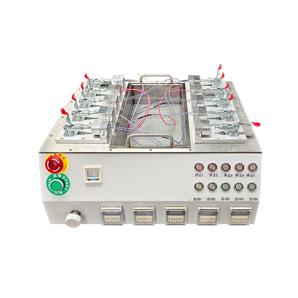
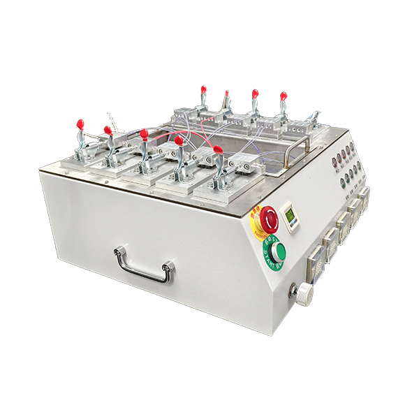
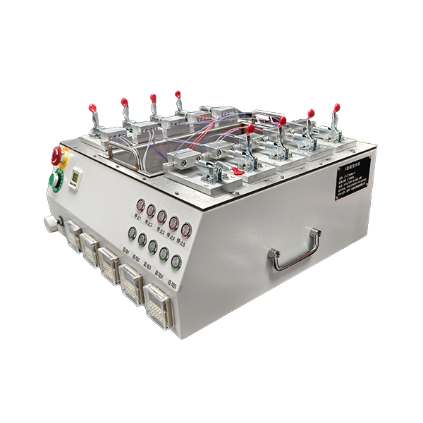
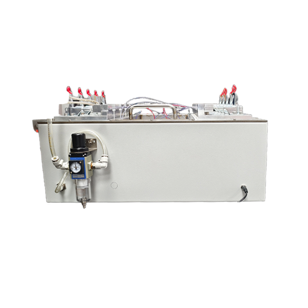
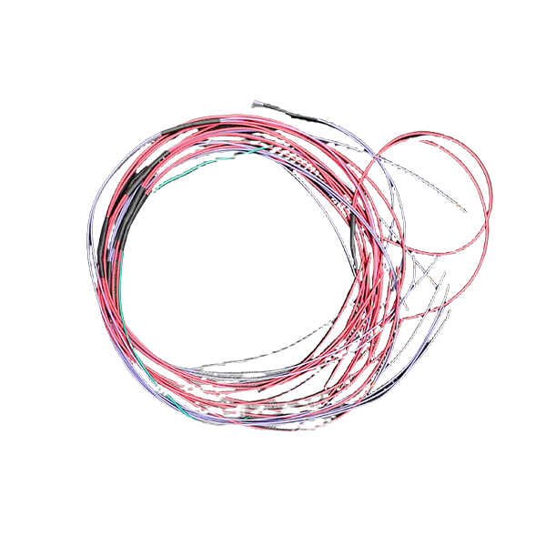
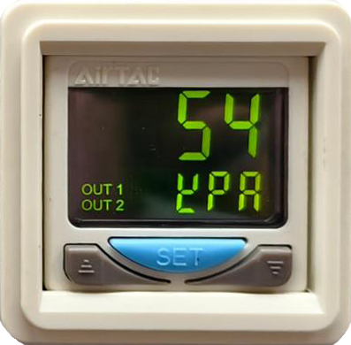

جهاز مخصص بخمس قنوات لكشف تسرب أنابيب الانكماش الحراري بالغمر في الماء
نفخ وتحكم مستقل في التشغيل والإيقاف لخمس قنوات، مع تحديد مواضع التسرب في أنابيب الانكماش الحراري والوصلات المحكمة لضفائر الأسلاك بصريًا عبر الفقاعات في الماء





السعر الفعلي يعتمد على تخصيص المنتج.
نظرة عامة على المنتج
- يُستخدم الجهاز المخصص بخمس قنوات لكشف تسرب أنابيب الانكماش الحراري بالغمر في الماء لاختبار مقاومة الماء والتسرب في أنابيب الانكماش الحراري ومقاطع إحكام الفروع ووصلات ضفائر الأسلاك.
- يمكن تشغيل وإيقاف دوائر الاختبار الخمس بشكل مستقل، كما يمكن فحص عدة منتجات بالتوازي لتنظيم التثبيت والاختبار وتأكيد النتائج حسب كل قناة في موقع الإنتاج.
- أثناء الاختبار، يُضخ هواء مضغوط نظيف بضغط محدد إلى التجويف المحكم للضفيرة، ثم يوضع الجزء المختبر في الماء لتحديد التسرب وموضعه بصريًا من خلال الفقاعات المستمرة.
- يمكن تخصيص أداة التثبيت ووصلات الإحكام وعدد القنوات وتخطيط الجهاز وفقًا لطول الضفيرة ونوع الواجهة وضغط الاختبار وزمن دورة المحطة.
ضمان الجودة
تضمن منتجاتنا جودة الاختبار وتجربة المستخدم من خلال ميزات أساسية متعددة
اختبار مستقل بخمس قنوات
تحديد بصري لموضع التسرب بالفقاعات
ضغط اختبار قابل للضبط

تثبيت سريع متعدد المحطات
تحكم مستقل في التشغيل والإيقاف

تخصيص متاح
تفاصيل المنتج
المظهر وتصميم التفاعل
منصة اختبار متكاملة
يُدمج خزان الماء ودوائر هواء الاختبار ومحطات التثبيت وأزرار التحكم في هيكل مكتبي واحد، لسهولة التركيب في موقع الإنتاج والتشغيل اليومي.

عرض رقمي للضغط
يعرض مؤشر الضغط الرقمي ضغط الاختبار بوضوح، مما يسهّل على المشغل متابعة قيمة الضغط الحالية.
المزايا الأساسية
اختبار متوازٍ بخمس قنوات
لكل دائرة من دوائر الاختبار الخمس وصلة وأزرار تشغيل وإيقاف مستقلة، ويمكن تشغيلها منفردة حسب الحاجة أو فحص عدة ضفائر أسلاك بالتزامن لرفع كفاءة استخدام المحطة.
تحديد موضع التسرب بوضوح
لا يقتصر اختبار الغمر في الماء على تحديد وجود التسرب، بل يحدد مباشرة موضع العيب في أنبوب الانكماش الحراري أو الوصلة أو مقطع الإحكام من خلال مكان ظهور الفقاعات.
تخصيص الأدوات وعملية الاختبار
يمكن تخصيص وصلات الإحكام ومواضع التثبيت وحجم خزان الماء وتكوين القنوات وفقًا لطول الضفيرة وعدد الفروع ونوع الواجهة وضغط الاختبار.
سيناريوهات التطبيق
تجميعات ضفائر أسلاك السيارات
فحص مقاومة الماء في فروع ضفائر السيارات والوصلات الطرفية ومقاطع الإحكام.
مقاطع إحكام أنابيب الانكماش الحراري
كشف مواضع التسرب الناتجة عن الانكماش غير المتجانس أو التغطية غير الكافية أو التلف أثناء التصنيع.
نقاط تفرع ضفائر الأسلاك
التحقق من سلامة الإحكام عند نقاط التقاء عدة أسلاك وفي مناطق التغليف بمادة الحشو.
الوصلات المقاومة للماء
مناسب لكشف التسرب بعد تجميع ضفيرة الأسلاك مع الموصل أو الغلاف الواقي أو وصلة الإحكام.